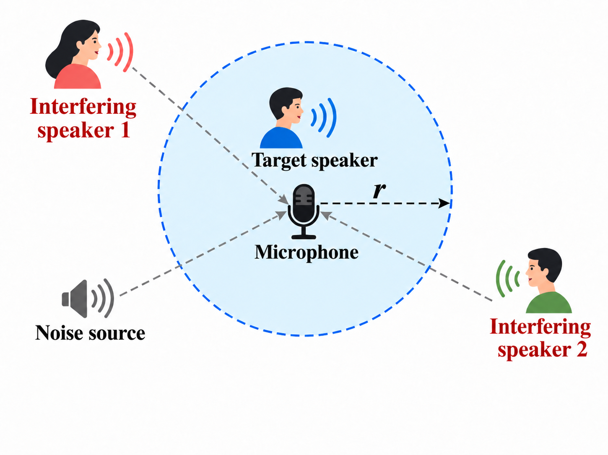
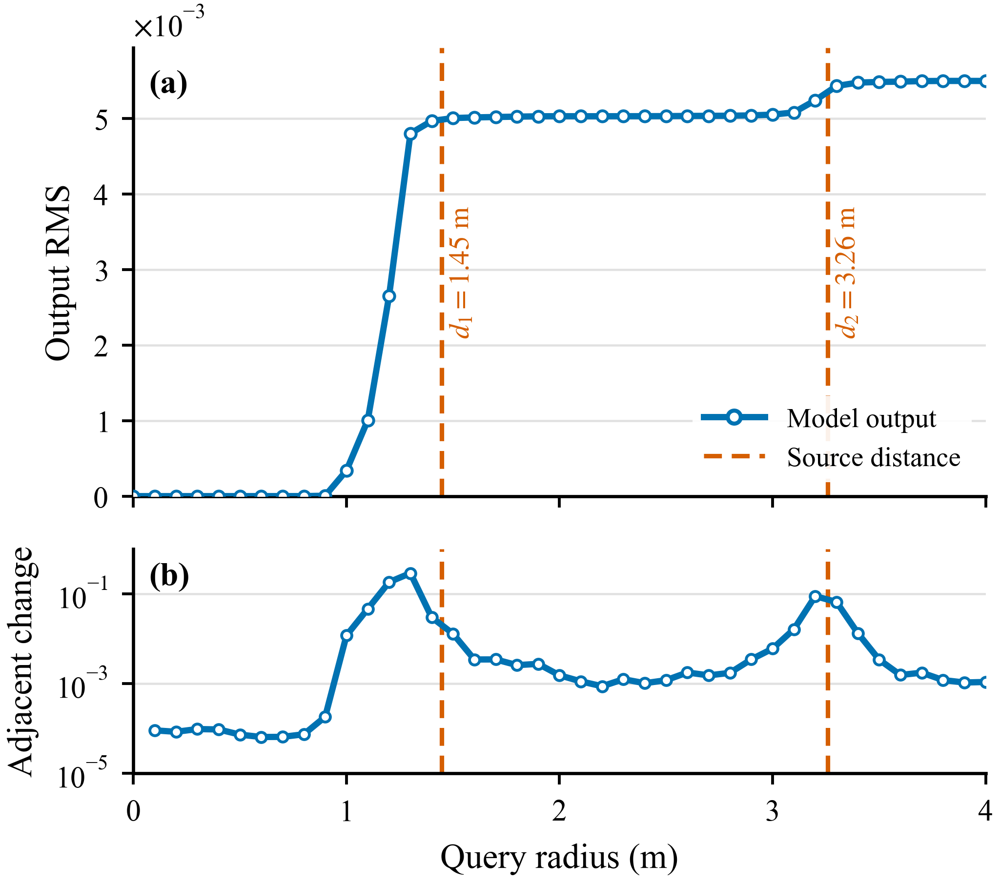
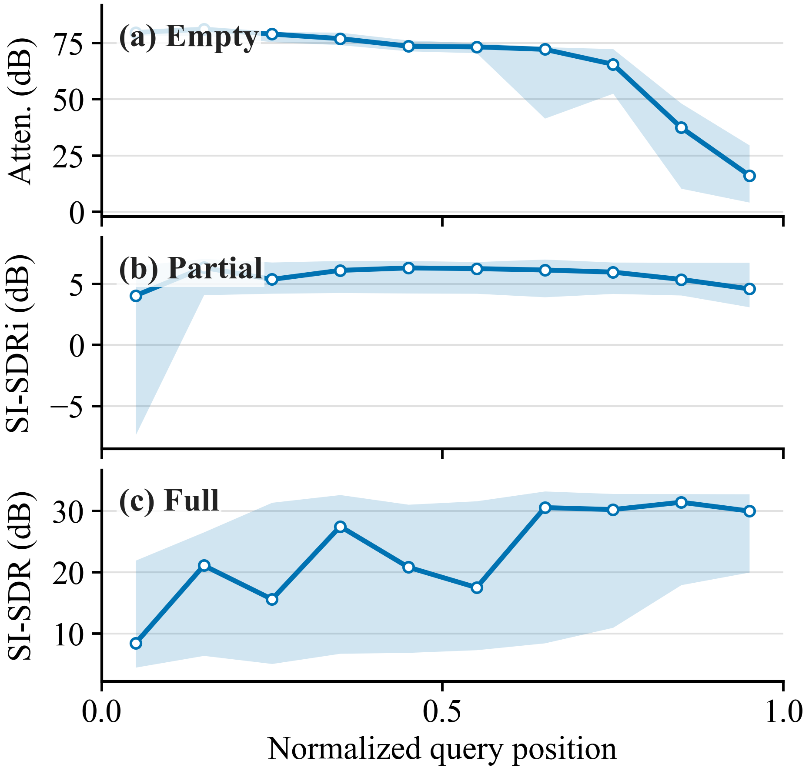

Continuous control
Query a radius, rather than choose from a small set of fixed extraction modes.
One microphone. An adjustable listening region. Query the voices within a chosen radius. Encourage consistent outputs when the target speaker set stays unchanged.

Source-to-microphone distance enables speaker-independent speech extraction without prior enrollment. We propose a monaural continuous-radius regional speech extraction method that directly models the cumulative speech target within a queried radius. To realize continuous region control, the query radius is encoded as a continuous scalar and injected into a time-frequency extraction network, allowing a single model to operate over arbitrary radii within the trained range. Exploiting the nested structure of target-speaker sets across query radii, we introduce cross-radius consistency learning to stabilize predictions for adjacent radii sharing the same nonempty target-speaker set. Experiments on measured RIRs show that continuous-radius conditioning improves selective extraction over discrete conditioning. The proposed method achieves 29.25 dB SI-SDR, 4.40 dB SI-SDRi, 62.01 dB attenuation, and 0.46% RCE, outperforming fixed-threshold and local-range baselines. It also remains effective with more speakers and additive noise.


Query a radius, rather than choose from a small set of fixed extraction modes.
Encourage unchanged outputs between queries whose target speaker sets are identical.
Preserve all in-region speech, extract a subset, or reject an empty region.
The three tables below reproduce the baseline comparison, ablation study, and evaluation under challenging conditions reported in the paper.
| Method | Radius mode | Full SI-SDR ↑ | Partial SI-SDRi ↑ | Empty Atten. ↑ |
|---|---|---|---|---|
| DSS | Fixed | 22.03 | 0.39 | 56.12 |
| QD-TSE + interval sum | Local + sum | 25.99 | 1.12 | 54.10 |
| Ours | Continuous | 29.25 | 4.40 | 62.01 |
| Radius conditioning | Consistency | Full SI-SDR ↑ | Partial SI-SDRi ↑ | Empty Atten. ↑ | RCE ↓ |
|---|---|---|---|---|---|
| Discrete | × | 24.68 | 3.04 | 49.68 | 1.04% |
| Discrete | ✓ | 28.75 | 3.15 | 57.70 | 0.81% |
| Continuous | × | 27.04 | 3.08 | 51.13 | 0.85% |
| Continuous | ✓ | 29.25 | 4.40 | 62.01 | 0.46% |
Values reproduced directly from the manuscript ablation table. Continuous radius encoding and cross-radius consistency together give the best result on every metric.
| Condition | Full SI-SDR ↑ | Partial SI-SDRi ↑ | Empty Atten. ↑ | RCE ↓ |
|---|---|---|---|---|
| 2-spk, Clean | 29.25 | 4.40 | 62.01 | 0.46% |
| 2-spk, 10 dB | 29.05 | 4.23 | 61.76 | 2.31% |
| 2-spk, 5 dB | 28.38 | 3.92 | 60.47 | 3.17% |
| 3-spk, Clean | 26.17 | 3.19 | 59.28 | 1.12% |
| 3-spk, 10 dB | 24.98 | 3.10 | 52.67 | 4.15% |
Values reproduced directly from the manuscript generalization table. Increasing the speaker count and adding noise reduce extraction quality and increase RCE.


Compare the input with precomputed model outputs at 1/2/3/4 m. These are saved examples, not live browser inference.
Selected qualitative examples, not random samples. Input and outputs keep their saved amplitudes; an empty-target output may be almost silent. No independent loudness normalization.
The paper is available on arXiv.